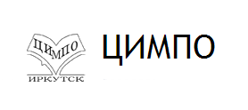
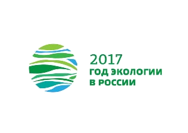
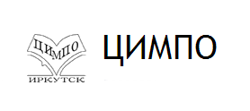
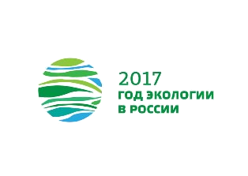

Сайт создан специально для конкурса web–сайтов «Природа Иркутской области»
Разработчик:
Ковальчук Дмитрий ученик 10 класса МБОУ СОШ №7
Ссылка на сайт организатора  
Разработчик:
Ковальчук Дмитрий ученик 10 класса МБОУ СОШ №7
Ссылка на сайт организатора  